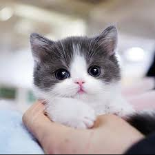
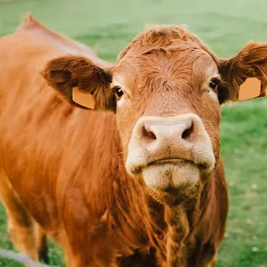
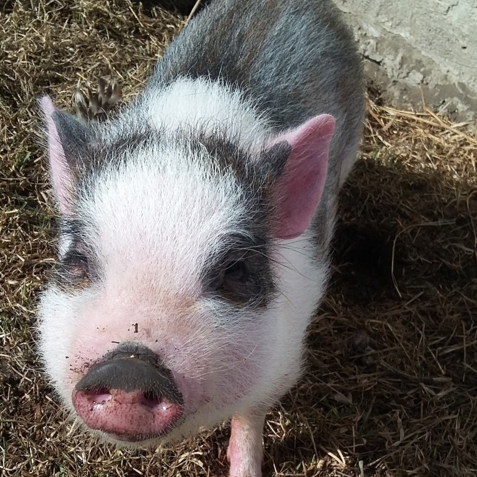
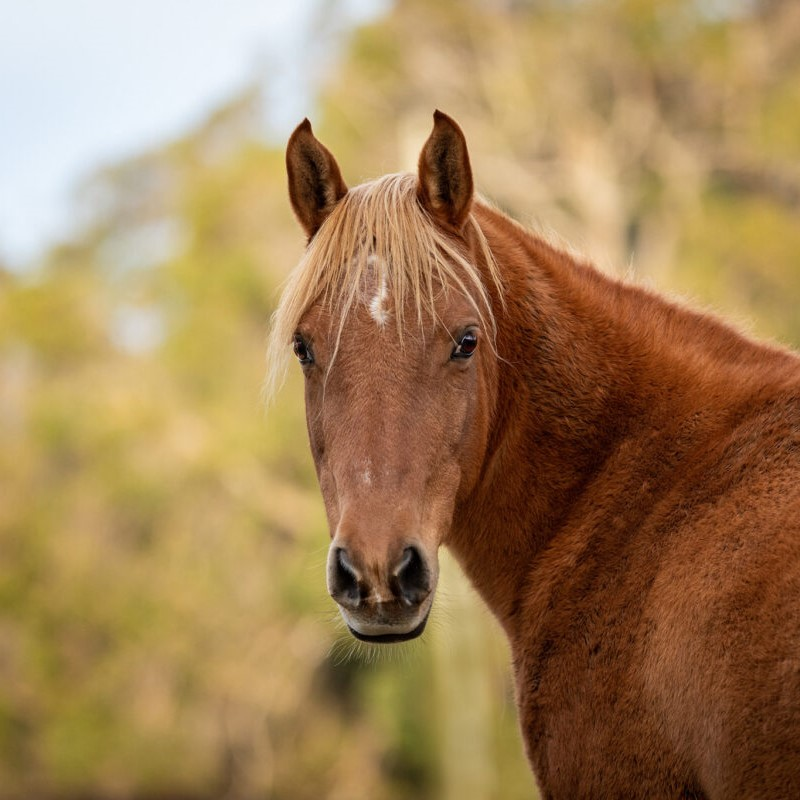

Welcome to our comprehensive animal encyclopedia, a digital treasure trove of knowledge about the diverse creatures that share our planet. This collection serves as your gateway to understanding the remarkable world of animals, from the adorable companions that warm our hearts to the essential livestock that sustain our communities. Each entry has been carefully crafted to provide you with fascinating insights, behavioral patterns, and interesting facts about these wonderful creatures. Whether you're a student conducting research, a nature enthusiast, or simply curious about the animal kingdom, this encyclopedia offers reliable, engaging information that brings the natural world closer to you.
Cute Animals
The animal kingdom is filled with creatures that captivate us with their irresistible charm and endearing qualities.
These adorable animals, with their expressive eyes, playful behaviors, and gentle nature, have a unique ability to bring joy and comfort to our lives.
From the boundless energy of puppies discovering the world around them, to the soft purring of kittens as they curl up for a nap, these creatures embody pure innocence and wonder.
Scientific research has shown that interacting with cute animals can reduce stress, lower blood pressure, and increase levels of happiness-inducing hormones like oxytocin and serotonin.
Beyond their therapeutic benefits, these animals teach us valuable lessons about unconditional love, living in the moment, and finding joy in simple pleasures.
Their presence in our lives creates lasting bonds and memories that enrich our human experience in countless ways.

Kittens
Playful, curious, and incredibly soft, kittens are nature's perfect companions.
Farm Animals
Farm animals have been humanity's trusted partners for over 10,000 years, forming the backbone of agricultural civilization and food security worldwide.
These remarkable creatures—including cattle, pigs, sheep, goats, and poultry—have been selectively bred over millennia to provide essential resources such as meat, dairy products, eggs, wool, and leather.
Beyond their economic value, farm animals play crucial ecological roles in sustainable farming systems, contributing to soil fertility through natural fertilization and helping maintain grassland ecosystems.
Modern agriculture increasingly recognizes the importance of animal welfare, with many farms adopting practices that ensure these animals live comfortable, healthy lives.
From rotational grazing systems that benefit both animals and land, to free-range environments that allow natural behaviors, the relationship between humans and farm animals continues to evolve.
These animals are not just livestock; they are sentient beings with complex social structures, emotional needs, and the capacity for forming bonds with their caretakers.
Understanding and respecting their needs is essential for building a sustainable and ethical agricultural future.

Cattle
Gentle giants that provide milk, meat, and leather while maintaining grasslands.

Pigs
Intelligent animals that are surprisingly clean and social when given proper care.

Horses
Majestic animals that have served as companions, workers, and partners throughout history.